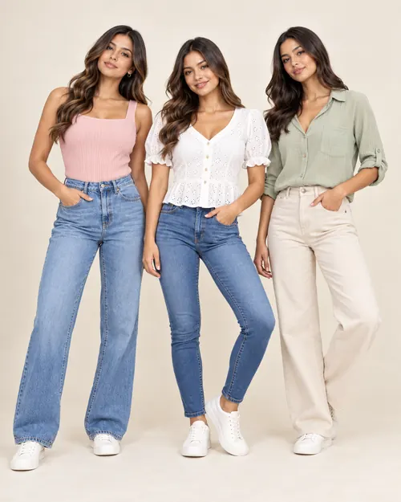
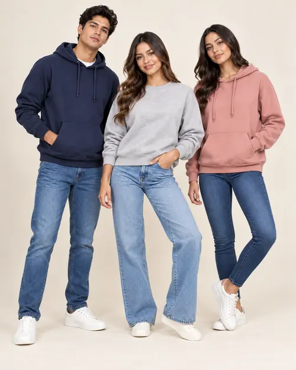
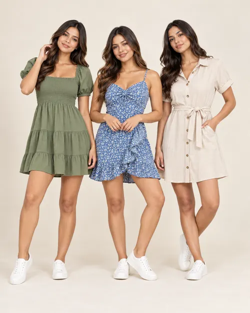

Básicos
Blusas y tops
Prendas frescas y versátiles para looks casuales de todos los días.
Prendas versátiles, actuales y cómodas para acompañarte en tu día a día. Descubre una propuesta de moda casual pensada para diferentes estilos y temporadas.
Conoce nuestras principales categorías de ropa casual. Consulta disponibilidad, modelos y tallas mediante nuestros canales de atención.

Prendas frescas y versátiles para looks casuales de todos los días.

Opciones cómodas y combinables para un estilo urbano actual.

Capas cómodas para temporadas frescas y estilos urbanos.

Diseños ligeros y funcionales para diferentes ocasiones.

Básicos para usar solos o como parte de un outfit completo.
Escríbenos y te orientaremos sobre modelos y disponibilidad.
Solicitar información
Somos una MYPE del sector textil ubicada en Gamarra, La Victoria. Nuestra propuesta se orienta a la comercialización de ropa casual para distintas ocasiones y temporadas, combinando variedad de prendas, atención directa y una experiencia de compra sencilla.
YEROMA fortalece progresivamente su presencia digital para que más personas puedan conocer sus productos, consultar disponibilidad y comunicarse con un asesor sin depender exclusivamente de una visita presencial.
Opciones casuales para diferentes estilos y temporadas.
Prendas pensadas para acompañarte en tu rutina diaria.
Comunicación directa para resolver consultas y orientar tu elección.
Consulta productos mediante web, redes sociales y mensajería.
Combina prendas ligeras, denim, básicos y opciones de abrigo según el momento del año.
Escríbenos para consultar modelos, disponibilidad y mayor información sobre nuestras prendas.
Correo
yeroma.oficial@gmail.com
Ubicación
Gamarra – La Victoria, Lima, Perú
Escríbenos por WhatsApp para consultar modelos y disponibilidad.
Consultar por WhatsApp